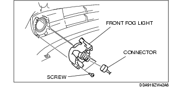
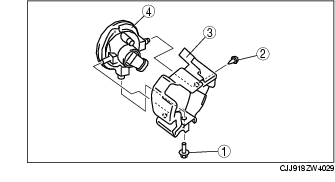

Front fog light removal/installation [Vehicles with standard type bumper]
1. Disconnect the negative battery cable.
2. Remove the front bumper. (See FRONT BUMPER REMOVAL/INSTALLATION.)
3. Disconnect the connector.

4. Remove the screws, then remove the front fog light.
5. Remove in the order indicated in the table.

6. Install in the reverse order of removal.
7. Adjust the front fog light aiming. (See FRONT FOG LIGHT AIMING.)